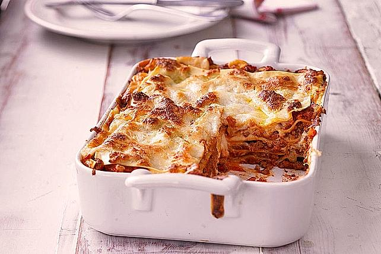

Lasagna Recipe

Homemade lasagna isn't as hard to make as it seems. Don't be intimidated by all the layers of delicious Italian flavor - try this homemade lasagna recipe today!
Lasagna Ingredients
For the bolognese sauce:
- oliveoil
- 500g mixed minced meat
- 1 onion
- 2 cloves of Garlic
- 1 bunch of parsley
- 1 tablespoon of tomato paste
- 1 can of Tomatos, peeled of(800g)
- some redwine
For the bechamelsauce:
- 500ml milk
- 30g butter
- 40g flour
- salt and pepper
- lemon juice
- nutmeg
In addition:
- 300g lasagna sheets
- some grated chees
- flakes of butter
How to make lasagna
Bolognese sauce:
- Heat the oliveoil in an pot and sear the mixed mince meat.
- Add the sliced onions and the parsley.
- Let it sear a bit and add the fine sliced garlic and the tomato paste.
- Add the whole can of tomatos with the liquid.
- Refine it with pepper and salt if you desire.
- Add redwine at will.
- Let the sauce sear for at least half an hour with opened pot.
Bechamel sauce:
- Melt the butter in an little pot.
- Stir in the flour whit a whisk.
- Add Milk until the sauce gets smooth.
- Let it sear for half an hour on low heat.
- Refine the sauce with salt, pepper, lemon juice and nutmeg.
Preparation for the lasagna:
- Spread some butter in an baking tin.
- Add some bolognese sauce.
- On top of the sauce put one layer of lasagna sheets.
- Now add again some bolognese sauce and then one layer of lasagna sheets.
- Repeat until you filled the hole tin. The last layer should be the bolognese sauce.
- Add cheese as you like for the topping and sprinkle some butter flakes.
Preheat the oven to 180 degrees C (356 degrees F). Bake it for 30-40 minutes until the crust gets golden brown.
As a little appetizer I recomment honeydew melon whit parma ham.
As dessert a berry mix in yogurt mit golden brown sugar crust.